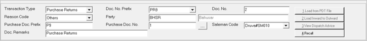

The header part of a goods outwards transaction is displayed.

Transaction Type: Select the transaction type from the list. The list displays the transaction types Purchase Returns, Transfers Out and Miscellaneous Issue based on the configuration.
Doc. No. Prefix: Displays the document prefix for the current document based on the type of transaction selected.
Doc. No.: Displays the serial number, based on the prefix, for the current document.
Reason Code: Select the reason for the outward transaction. The reason codes are as per the configuration in the General Lookup catalogue.
Party: Enter the party code. Party varies based on the transaction type selected. Alternatively, press F2 to display the list of party codes and names and select the appropriate party code.
The fields Purchase Doc. Prefix and Purchase Doc. No. are enabled if the transaction type selected is Purchase Returns. You can return items with reference to purchase documents, or without any reference. When returning items with reference against purchase documents, you may select the items after setting purchase documents for reference, or select the reference document after selecting the item.
Purchase Doc. Prefix: Enter the purchase document prefix, if there is only one purchase document involved.
Purchase Doc. No.: Enter the purchase document number, if there is only one purchase document involved.
In case you need to select
multiple purchase documents, click  to open the Purchase
Document Browse window.
to open the Purchase
Document Browse window.
Note:
On clicking  if item details are already
present in the grid, the following message is displayed. Select as per
your requirement.
if item details are already
present in the grid, the following message is displayed. Select as per
your requirement.

Salesman Code: Select the salesman code.
Doc Remarks: Enter the document remarks.
Note: In case Enable Delivery from Remote Location is set to 1-Yes in System Parameter,under category Delivery Process, then an additional field Location will be available in the header section. When location as part of batch is enabled, Location Code field will be displayed. Click here to view the header section of the Goods Outwards window.
Load from PDT File: This option is available based on configuration. Click to load item details from a text file.
If the PDT file format is not configured, the Browse window opens. Select the required PDT file format.
The Open window is displayed for file selection. Choose the file and click Open. The item details will be displayed in the grid.
Load Inward to Outward: This option is available based on configuration. This is useful to send all items in an inward document to any of the stores in the chain. Click to send all the items received against a goods inward document to an outward document. Click here for more information.
View Dispatch Advice: This option is available only if any Dispatch Advice is available. Click to select the dispatch advices.
Recall: Click to select from Packing Slip / Pallet Slip.
Note:
Show Item Tags: This option will be available if serial numbers is configured under Catalogue > Serial No. Configuration.
In System Parameter, the Item Tag can be configured up to five levels under Item Tag category.
Click here to view the Item Tag window.